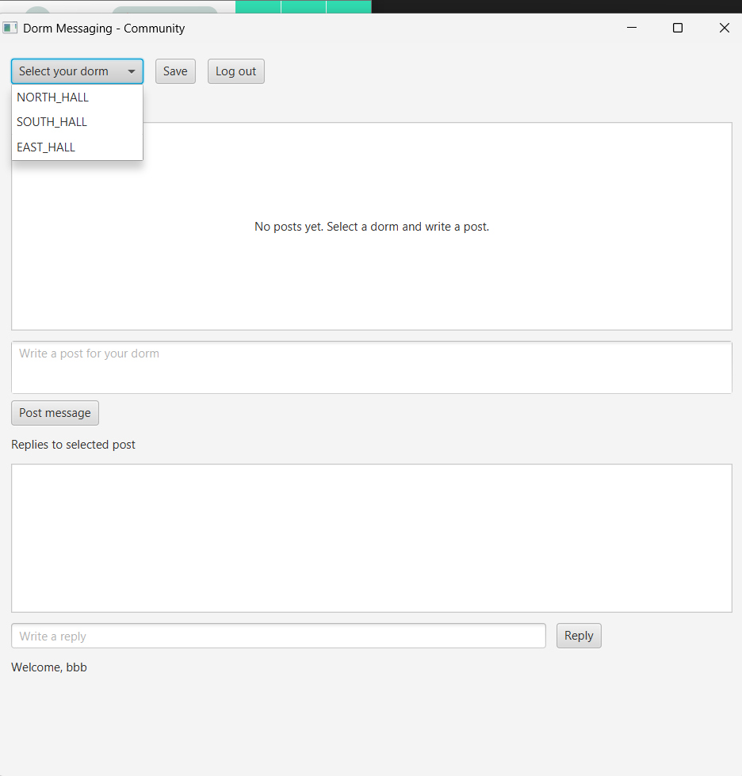
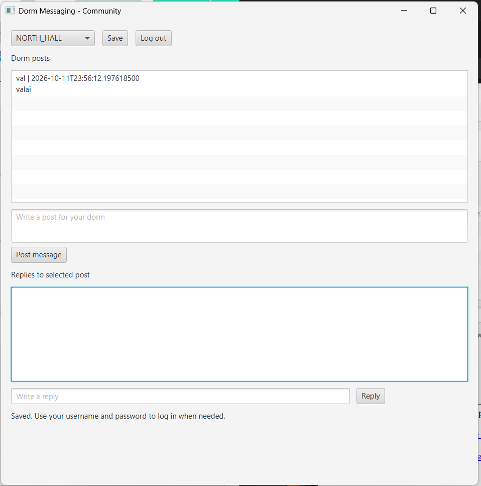

- Log in to open the Community window.
- Open the Select your dorm dropdown at the top.
- Choose NORTH_HALL, SOUTH_HALL, or EAST_HALL.
- The feed updates to show posts for the selected dorm. The selection is saved automatically if saving succeeds.


You must log in before selecting a dorm. You can switch dorms using the same dropdown.